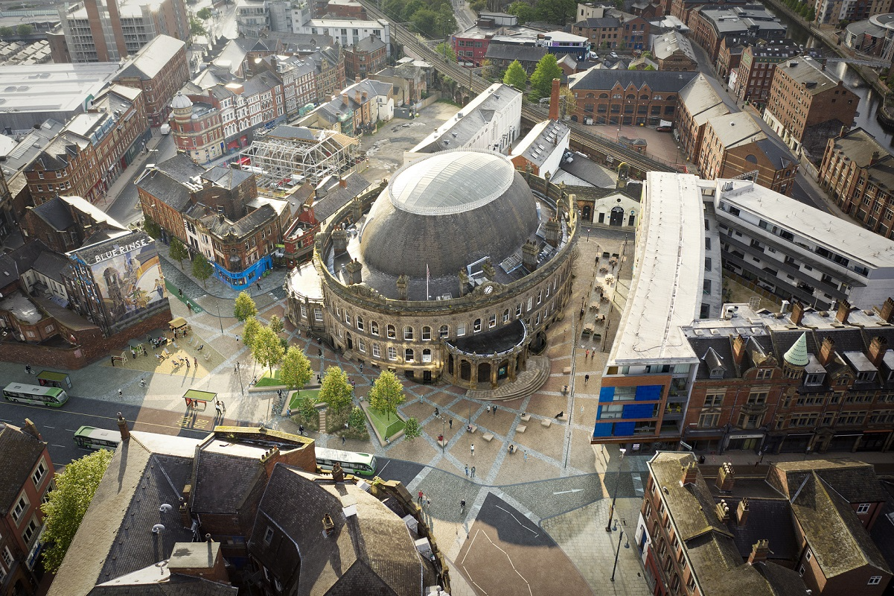
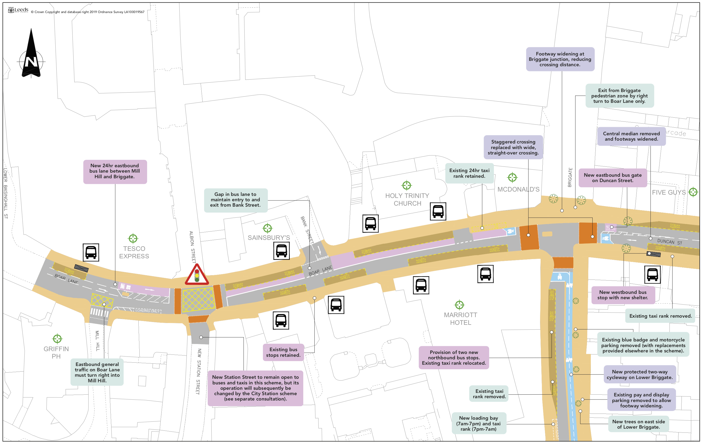
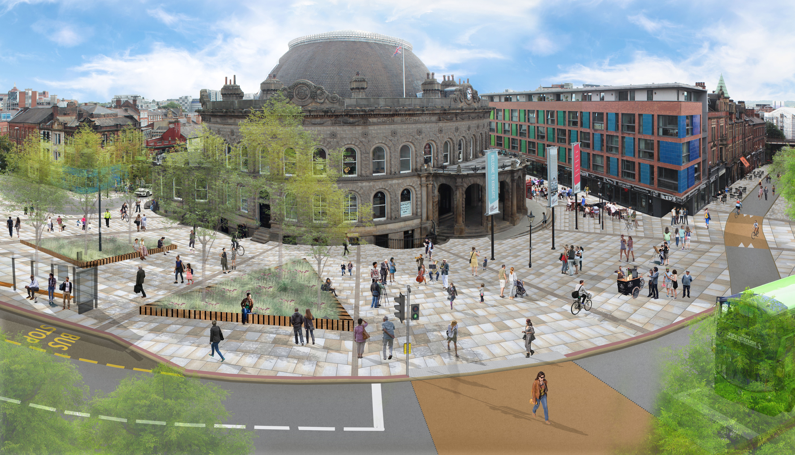
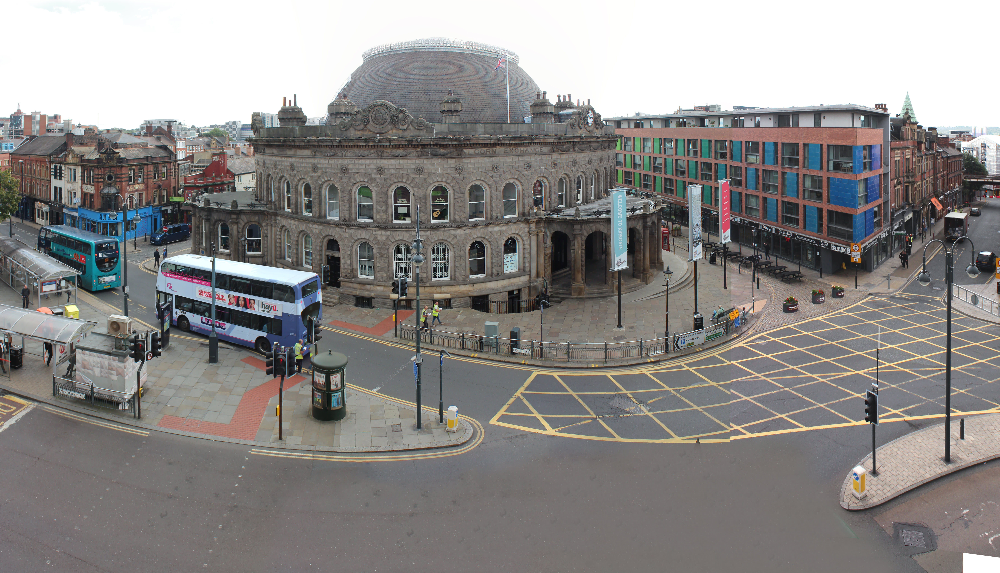
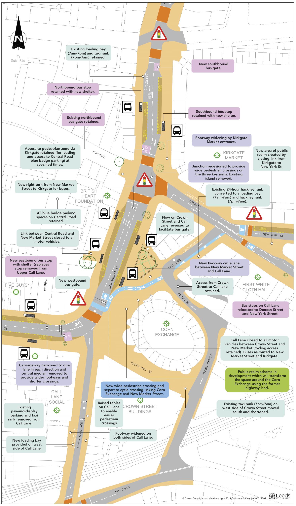
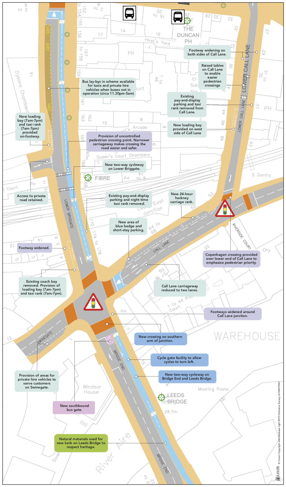
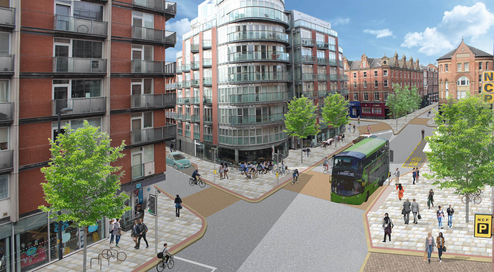
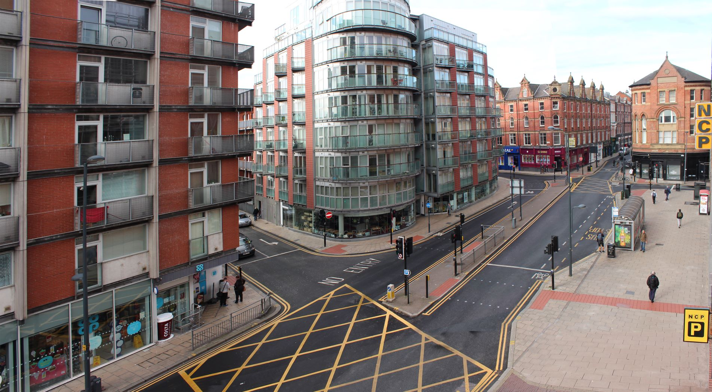
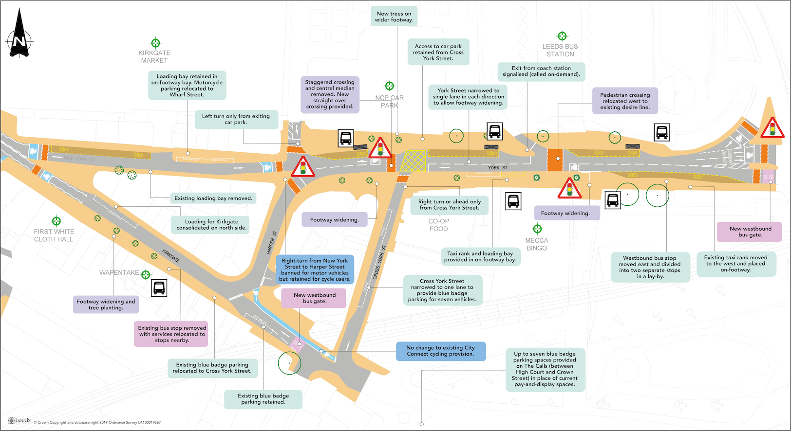

After nearly two years on site, the Corn Exchange scheme is expected to finish by May 2022. Highways improvements outside the Corn Exchange include dedicated bus gates for more reliable bus services in the centre, new cycle lanes, wider footways, pedestrianisation of Call Lane and straight across pedestrian crossings. The space directly outside the Corn Exchange benefits from raised planters and accessible seating offering a new public area for the city centre.

In October 2019, we consulted on plans to transform the area around the Corn Exchange. With over 100 buses passing through the area every hour, it’s a key gateway for people visiting or working in the city. It’s also home to one of the city’s most iconic buildings and is a lively vibrant hub for nightlife. The area no longer meets the transport and economic ambitions of the city – it is usually congested, particularly in rush hour and buses are regularly delayed.
The area no longer meets the transport and economic ambitions of the city – it is usually congested, particularly in rush hour and buses are regularly delayed.
In 2016, Connecting Leeds was granted an unprecedented £270 million to invest in the transport network and after two rounds of consultation on this area, 2,200 responses and listening to your feedback, we’re ready to update you on our scheme design.Most people responding to our previous consultation felt positively about our proposals and that they would make the area a more desirable location for everyone. Respondents felt the proposals would bring benefits for pedestrians, public realm, air quality and public safety.
We are making changes to the road network to reduce traffic, improve bus services, and create dedicated cycle lanes. These improvements will make Exchange Square safer and more accessible for everyone.
Work started on site in August 2020 and the entire scheme is set to be complete by May 2022. John Sisk & Son are the contractors working on site.
To support this work, the upper section of Call Lane (outside Blue Rinse) will be closed to buses and private hire vehicles.
The central reservation will be removed from Duncan Street to allow for wider pavements and a new wider crossing will be in place outside McDonald’s offering pedestrians and cyclists priority.
There will be a new protected two-way cycleway in place on Lower Briggate to encourage active travel into the city, and more greenery in the area to improve public realm.
To meet the demands of the bus network, there is a requirement to provide:

This section is at the very heart the scheme. It is one of the busiest areas in West Yorkshire for bus movements with buses serving the north and south side of the city.
Bus passengers are currently served by the very unpopular Perspex tunnel, in front of the Corn exchange; this will be removed and replaced with accessible high-quality bus stops with real time and audio information.
There is also a proposal to close part of Call Lane (immediately in front of the Corn Exchange building).
We will do the following to facilitate bus demand:
- 2 x bus stops on New Market Street both north-bound and south-bound, and two bus tops on Vicar Lane.
- Crown Street will run north to south rather than south to north.



There will be a new two-way cycleway on Bridge End and Leeds Bridge which will link over to Lower Briggate, encouraging active travel in to the city. Through a combination of dedicated cycle lanes, road use and shared space the cycle route will enable access through the heart of the city centre, passing the Corn Exchange and heading along Call Lane then Kirkgate. There will also be Copenhagen crossings over Dock Street, Water Lane and Waterloo Street which will offer priority to pedestrians and cyclists, improving journey times for those travelling in to the city by foot or on bike.
To serve the night-time economy, we propose to provide two day-time loading bays on the west side of Lower Briggate, each of which will function as a Hackney carriage ranks from 7pm – 7am. On Call Lane between Duncan Street and The Calls, we are providing a loading bay. There is a requirement to widen the inadequate footway on the west side of this section of Call Lane to ensure it is safe and accessible for pedestrian; to retain a clear route for buses, we’ll need to change the road layout. This means we won’t be able to provide for parked vehicles here and the existing on-street pay and display parking will be removed. On the north side of the loop road section of Call Lane, we are providing a Hackney carriage rank, a length of blue badge parking and a length for loading, which can also be used for pick-up and drop-off by private vehicles.

This area is a key part of the bus network for services running across the city. It’s a key source of delay for buses. Improvements are planned at the bus station and this project will complement that investment by enhancing provision for pedestrians and bus users.
To meet the demands of the bus service, we are proposing:
To support the regeneration of Kirkgate and meet our climate emergency objectives, we’re widening footways on the south side of Lower Kirkgate, planting new trees and removing all existing car parking west of Harper Street.
Up to seven blue badge parking spaces will be provided on The Calls in place of current pay and display spaces.



Click here to find out more about work happening on Meadow Lane.
We don’t anticipate too much disruption to the bus network during this scheme; however there might be some changes to bus stops. We will update this page and the Metro website and posters will be placed on the relevant stops We’ll also be introducing peak-time bus priority controls and temporary bus cameras in the construction zone to ensure that bus timetables are not negatively affected by the construction work.